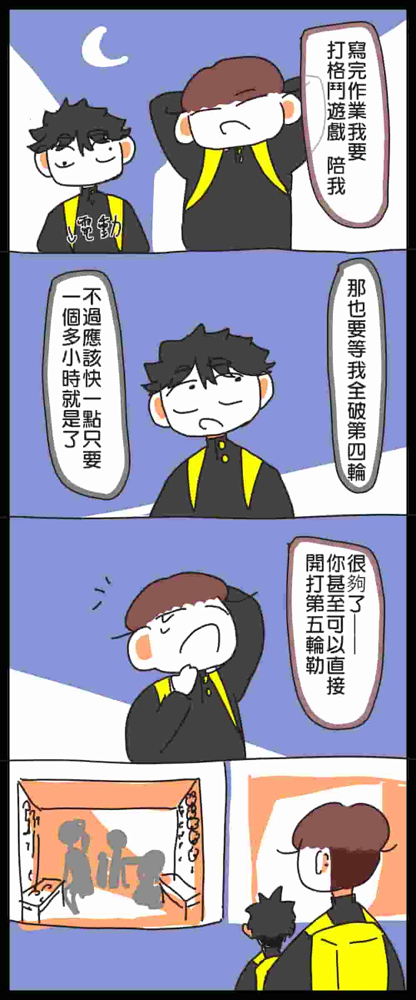
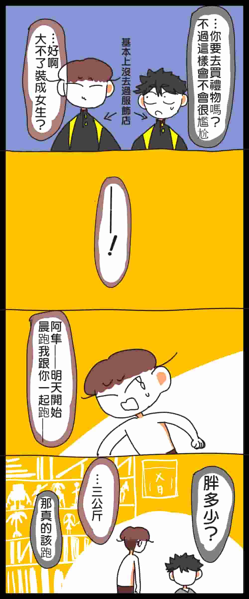

第一集
上一頁



 雖然說我沒畫出來，但其實蛋糕只有三分之一被阿隼跟美鶴吃掉
雖然說我沒畫出來，但其實蛋糕只有三分之一被阿隼跟美鶴吃掉
剩下的全數被兩人回收了當然會胖
然後這裡是阿隼的房間
其實最一開始就像簡介裡說的一樣，這部漫畫是以普通日漫格式來畫的
而且就算換四格漫畫，這部也遠遠比屋頂上的百田學長還要遇到更多風格上的問題，
最一開始的線條真的是用手繪風畫的，但是上色困難，所以這部漫畫一共在開頭前兩頁就重寫了四次故事，
並且重畫了六次。我能堅持下來簡直是奇蹟
所以漫畫裡很多回憶錄、對話、奇怪的描寫，
很有可能就是在說那些已經廢棄的版本裡面的設定
這點在屋頂上的百田學長也是一樣的喔
上一頁